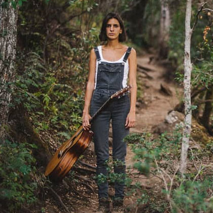

Sobre Ine
Ine Güemes, guitarrista y cantautora argentina comenzó su carrera solista en el 2013 con la edición de su primer disco "Ahí va!" que fue presentado en varios escenarios de la ciudad de Buenos Aires y en el interior del país. En 2016 lanzó su segundo disco "Corazón de alcaucil" con sonidos afianzados en la naturaleza y el deseo palpable de viajar hacia el sur que la llamaba. Finalmente, su tercer disco, cabaña lanzado en abril de 2019. se grabo en la patagonia argentina y puede verse la influencia de ese contexto en los nuevos sonidos y canciones. El silencio, la conexion con la naturaleza, la montaña y lo escencial toman protagonismo.
“Vivir con lo esencial, tanto no he de precisar, mientras fuego no me falte”
